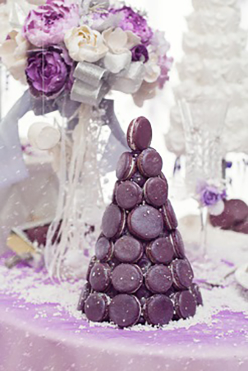
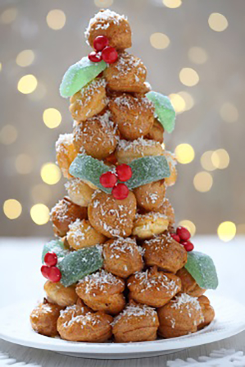
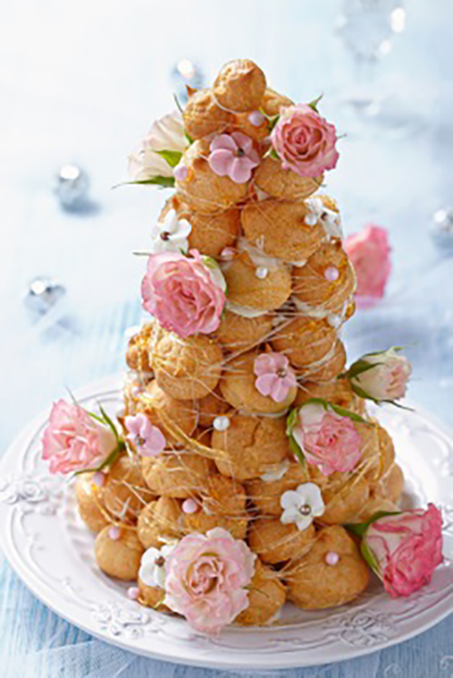
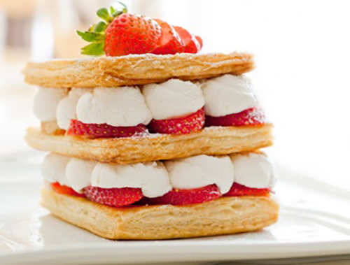
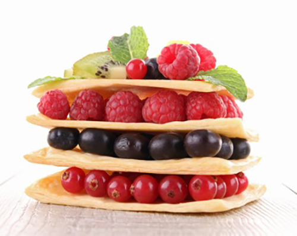
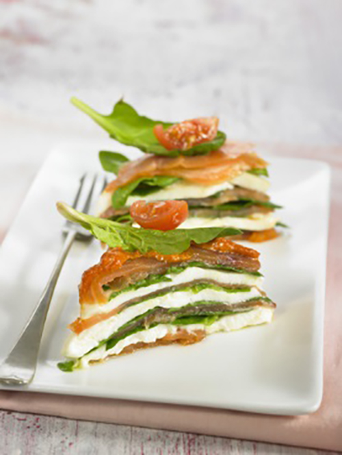

Task 2: Producing Paste Products
Click 'NEXT' to start.
Click 'NEXT' to start.
The preparation and production of paste products requires many different techniques. These include:
This technique is used when making a short paste. The fat should be cold which allows the chef to produce a fine crumb.
It can be achieved using mechanical means, a mixing machine or by hand.
A creaming technique is used when making a sweet paste.
The fat and sugar is creamed together before adding the liquid component of the recipe.
The method is best achieved using a mixing machine but can also be done by hand.
Folding is used when making puff or flaky paste.
Puff pastry is folded six times with a resting period of 20 minutes between each fold. The resting period is to allow for the gluten to relax to ease the rolling of the paste.
The result of the folding is many layers of pastry – this is called lamination.
Rolling is used to produce a paste such as puff pastry but also in the process of shaping other pastes such as a short or sweet paste.
When rolling any paste, care should be taken to:
With the exception of choux paste, all other pastes should be rested. This will:
The beating technique is employed when a smooth consistency is required for the paste. An example of this is a choux paste where the eggs are beaten into the mix once cooled.
Beating ensures:
For making paste for pork or gala pies:
For making a Genoise batter:
It is essential when making any paste products that the following is adhered to:
A quiche Lorraine is made with a short paste.
Fruit tarts are made with a sweet paste.
Profiteroles are made using a choux paste.
Eccles cakes are produced using a puff paste.
Steak and kidney pudding is produced using a suet paste.
When finishing any paste products it is essential that they are completed as per the requirements of the dish specification sheet.
It is at this stage that most care must be taken, as the visual impact has the greatest effect on the customer’s perceptions.
Products of the same type must be of the same:
Chefs must learn several finishing techniques to deliver a quality product. These include:
When finishing any paste products, icing allows the chef to use their artistic flair to improve the overall visual effect for their customers. Icing can take the form of:
Using egg wash on paste products will have different effects dependent on the mix of the egg wash:
Glazing provides a glossy smooth finish to a product and can be achieved using:
Piping is used as part of the preparation, for example in profiteroles, but it is also an essential finishing technique.
Piping allows the chef to add colour, shape, texture and flavour. Piping is not restricted to icing sugar. It can also be used for:
Filling paste products provides the chef with the opportunity to introduce new flavours, textures and colour to a finished product. Fillings include:
It is essential to not overfill as this will have a negative effect on the finished product.
Croquembouche
A croquembouche, French for ‘something that crunches in the mouth’, is a complex recipe due to the different skills required.
First you are required to make a choux pastry for the profiteroles, then a pastry cream for the filling. This is then followed by caramel which will help to hold the piece together, add flavour and provides the decorative finish.
Choux paste – ingredients
Pastry cream – ingredients
Caramel – ingredients
Choux paste – method
Pastry cream – method
Caramel – method
Making the croquembouche
Alternative takes on the croquembouche
|  |  |  |
|
A modern twist to a classic croquembouche uses macaroons instead of the profiteroles as the base. This twist also uses meringue as the base to hold the macaroons. |
An alternative decorative method for Christmas. |
This variation could be produced for a christening. |
Mille feuilles
Mille feuilles or in English translates to a ‘thousand layers’ are an extremely popular and challenging to make puff paste product. Another name for this product is ‘Napoleon’, possibly so named because this delicious sweet is fit for an emperor.
Mille feuille – ingredients
Mille feuille – method
Alternative takes on mille feuilles
The mille feuille has come a long way since Napoleon. Today’s modern chefs have managed to provide different types of mille feuilles using fruits and different creams and finishes.
|  |  |  |
|
Today’s chefs have even managed to use a mille feuille as a savoury using spinach, smoked salmon, mozzarella and tomato. |
You have now reached the end of this unit and are ready to progress to the media content or quiz. You can do this by clicking on the tabs below. Remember that you can revisit this unit to revise at any time.